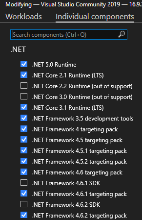
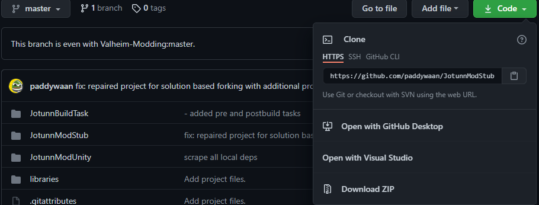
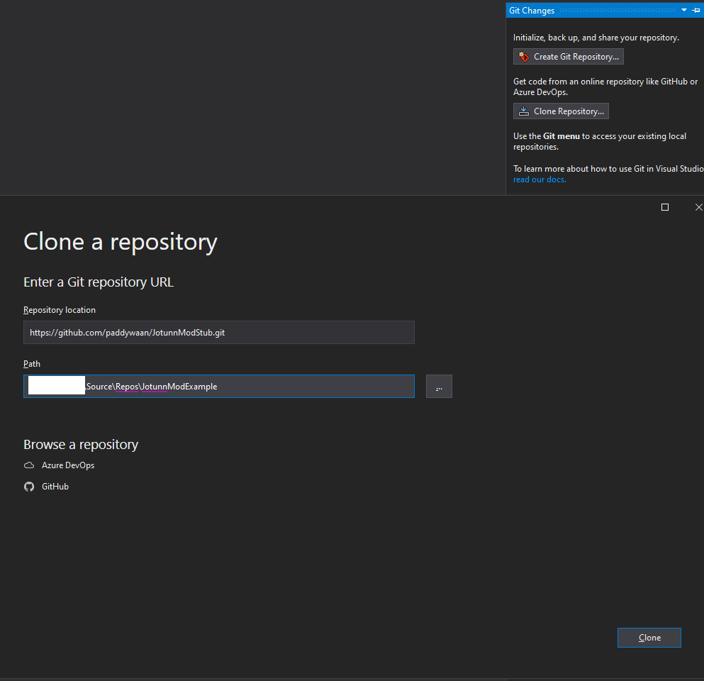
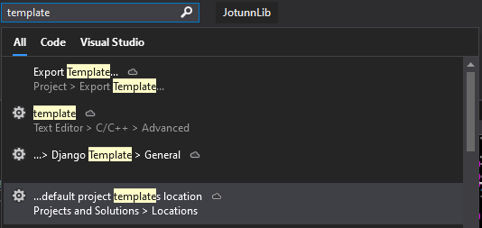
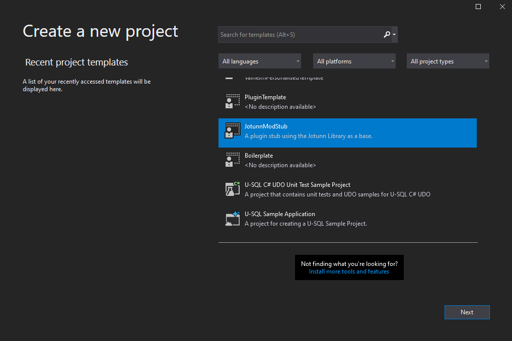

Getting started
If you already have a mod for Valheim and want to switch to Jötunn or did use legacy JötunnLib or ValheimLib before all you need to do is to install the latest release of Jötunn from nuget.org into your project and start using it. Jötunn uses MMHooks, so make sure you have build the detour dlls and reference them in your project.
Jötunn offers some PreBuild tasks to automate certain housekeeping duties for you. Skip the first part if you already have an environment setup but still want to learn about the automations.
If you want step-by-step instructions to start a Valheim mod from scratch using Jötunn continue reading as we guide you through the process of setting up everything you need to get going.
Development Environment
We begin by downloading BepInEx for Valheim and extract the zip file into your root Valheim directory.
Inside the visual studio installer, ensure that
.NET Desktop Developmentand.NET Core Cross-Platform Developmentare installed, then click on theIndividual Componentstab and select.NET Framework 4.6.2:
Fork our ModStub from github, and copy the link to the git
In visual studio, in the right hand toobar, select
Git Changes, and thenClone Repository, and paste the URL provided by the previous step. Name your project and place it accordingly.

Setting up Jötunn PreBuild automations
Add project references
Jötunn can automatically set references to all important libraries needed to mod the game on your project. To use this feature browse to your solution directory. Create a new file called Environment.props and place the following contents inside, modifying your <VALHEIM_INSTALL> to point to your game directory. This sets up references in your project to BepInEx, the publicized dlls, the unstripped corlibs from Unity and MMHook dlls.
<?xml version="1.0" encoding="utf-8"?>
<Project ToolsVersion="Current" xmlns="http://schemas.microsoft.com/developer/msbuild/2003">
<PropertyGroup>
<!-- Needs to be your path to the base Valheim folder -->
<VALHEIM_INSTALL>X:\PathToYourSteamLibary\steamapps\common\Valheim</VALHEIM_INSTALL>
</PropertyGroup>
</Project>
WARNING: This prebuild task will add references to your current project. If you already have setup that references it most certainly will duplicate them.
Publicize and MMHook Valheim assemblies
If you want the publicised and MMHOOK dlls automatically created, then set ExecutePrebuild in DoPrebuild.props to true. Create that file if you are not using the ModStub but still want Jötunn to create the Hooks for you. If you opt not to utilise this automation, it is suggested that you generate your method detours and publicised assemblies, and add them to your projects references manually.
<?xml version="1.0" encoding="utf-8"?>
<Project ToolsVersion="Current" xmlns="http://schemas.microsoft.com/developer/msbuild/2003">
<PropertyGroup>
<ExecutePrebuild>true</ExecutePrebuild>
</PropertyGroup>
</Project>
WARNING: This prebuild task will automate the generation of monomod method detours and publicising of game assemblies. By enabling this, you understand that you will be generating new publicised assemblies and method detours upon PreBuild **IF* the binaries have been updated since the last time the PreBuild has run.*
Manual setup
If for whatever reason you disable the prebuild, you will need to:
- acquire and install HookGen
- launch the game to generate event wrappers
- add the
/BepInEx/plugins/MMHook/assembly_*files to your project references. - grab the Assembly Publicizer (drag drop your `/BepInEx/plugins/MMHook/assembly_` files ontop of the publiciser)* and add the resulting assemblies to your stub project.
- Build the stub, make sure it compiles and automates the postbuild tasks, producing compiled binaries in your plugin directory
BepInEx/plugins/yourtestmod/folder and also generated ayourtestmod.dll.mdbmonodebug symbols file. - You may now proceed to one of the Tutorials
Customising your project
Once you have your base project, select the solution in the solution explorer, hit F2 to rename the solution as required. Rename your plugin project, an all namespace references, then right click your project settings and ensure the assembly name has also been changed.
Rename the
PluginGUIDPluginName, andPluginVersionto match your intended base release metadata. Your PluginGUID should contain your github username/organisation.Grab the Project Template which you can use to add new projects to your current solution, based on the mod stub boilerplate.
Place the project template into your
Restart visual studio. You can now create a new project using the imported templated. Right click your solution, add, new project, then scroll to the bottom where you will find the template:
Your project base is now ready for use! You can proceed to or select a specific section to learn about from our Tutorials
Post Build automations
Included in the ModStub and ModExample repos is a PowerShell script publish.ps1. The script is referenced in the project file as a post build event. Depending on the chosen configuration in Visual Studio the script executes the following actions.
Building Debug
- The compiled dll file for this project is copied to
<ValheimDir>\BepInEx\plugins. - A .mdb file is generated for the compiled project dll and copied to
<ValheimDir>\BepInEx\plugins. <ValheimModStub>\libraries\Debug\mono-2.0-bdwgc.dllis copied to<ValheimDir>\MonoBleedingEdge\EmbedRuntimereplacing the original file (a backup is created before).
Building Release
- The README.md in
SolutionDir/ProjectDir/package/README.mdis copied toSolutionDir/ProjectDir/README.mdso that it is present and readable in single-solution-multi-project githubs to give an overview of the project. - The compiled binary is placed inside of
SolutionDir/ProjectDir/package/plugins - The contents of
SolutionDir/ProjectDir/package/*is archived into a zip, ready for thunderstore upload.
Debugging with Visual Studio
Please see: this article